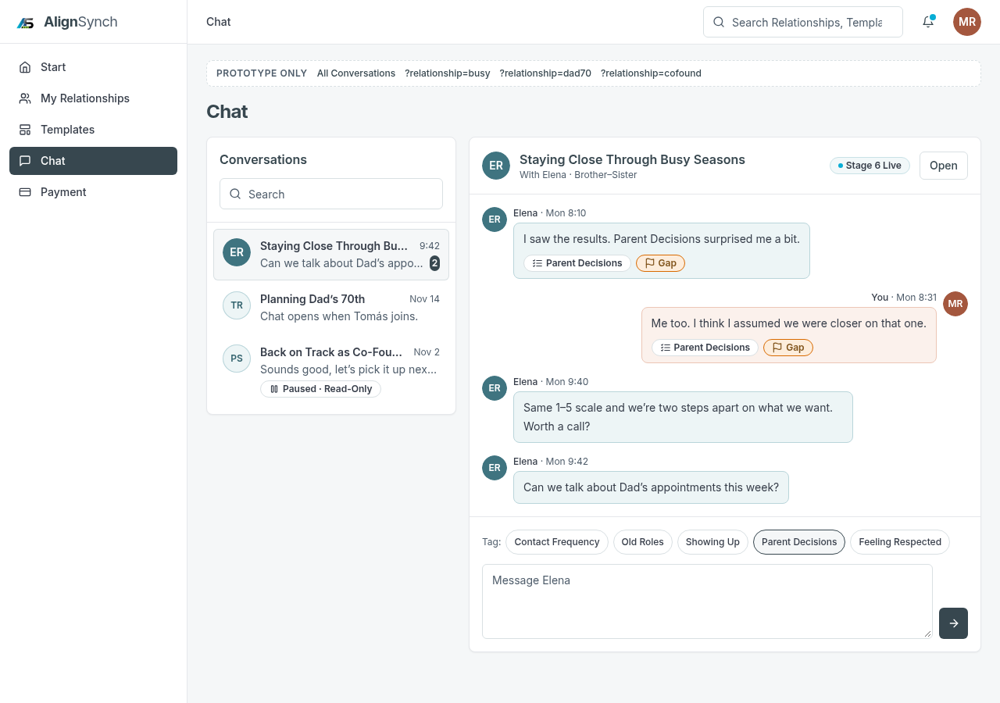
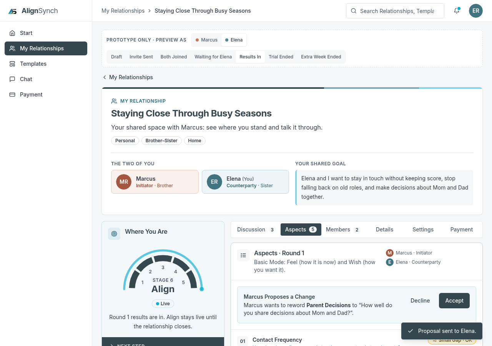

Project Spec 2.0 · Discuss
Talk it through, propose changes, get reminded. Agreed in 2024 against v2.0 today.
Talk it through, propose changes, get reminded.
Confidential: this page draws on the 2024 Consulting Agreement, which is under NDA (Exhibit C). It stays local and off the public preview. Fees are not reproduced; see Exhibit B.
Agreed
| ID | Page | Agreed in 2024 |
|---|---|---|
| APP-37 | p90, p93 | “use the Aspect Chat … Chat between Parties enabled” |
| APP-38 | p90, p128 | “Proposed Change … the other Party accepts the change” |
| APP-39 | p90, p91, p119 | “Change Shading Color … listed … in Change Log” |
| APP-40 | p74, p91 | “Aspect Change Email … Daily Opinion Change Email” |
| APP-41 | p27, p74–p75 | “We will occasionally remind you … Weekly Relationship Emails” |
No mockup in the agreement for this group; the text is the only source.
v2.0 Today

Discussion with Aspect tags · Bundle 07

An incoming proposal · Bundle 03
| ID | What v2.0 does |
|---|---|
| APP-37 | Discussion with Aspect tags is built; messages do not persist yet. |
| APP-38 | Propose a Change with an incoming proposal card. |
| APP-39 | Proposals are marked by a card, not shading. No member-visible change log was found (operators have Admin › Audit). |
| APP-40 | Neither email is in the template register. |
| APP-41 | Invitation reminder and trial-ending emails exist; no weekly relationship email. |
Status
| ID | Requirement | Status | Acceptance (MVP) |
|---|---|---|---|
| APP-37 | Both people can message each other in the relationship and tag an Aspect. | ◐ Partial | Messages persist across sessions and can be tagged to an Aspect. |
| APP-38 | Either person proposes a change to an Aspect or Value; the other accepts or declines. | ✓ Delivered | A proposal shows to the other person, who can accept or decline it; accepted changes apply. |
| APP-39 | Pending changes are marked and every change is listed in a log both people can read. | ◐ Partial | The relationship shows a dated list of proposed, accepted and opinion changes. |
| APP-40 | Email the other person on each proposed change and a daily summary of opinion changes. | ◌ Tentative | A proposal triggers an email; opinion changes roll into one daily email. |
| APP-41 | Reminder and retention emails. | ◐ Partial | Invite and trial reminders send; a weekly relationship email is defined. |
◐/◌ Gap or Tentative: APP-37. APP-39. APP-40. APP-41.
Evidence
- APP-37 ·
data/pages/chat.ts:51; guides/shared/chat-and-discussion.md · Docs: Chat And Discussion - APP-38 · guides/shared/propose-a-change.md · Docs: Propose A Change
- APP-39 · guides/shared/propose-a-change.md;
app/(mainlayout)/admin/audit/page.tsx:18 - APP-40 ·
content/email-bodies.md:81 - APP-41 ·
content/email-bodies.md:81;content/email-bodies.md:101
Status words: ✓ Delivered · ★ Over-Delivered · ◐ Partial · ⇄ Offset (replaced; see the row) · ◌ Tentative (not built, deferred or awaiting a decision) · ⊘ Out of Scope (removed, with a citation). Code citations are file:line on main @ 601ce26.